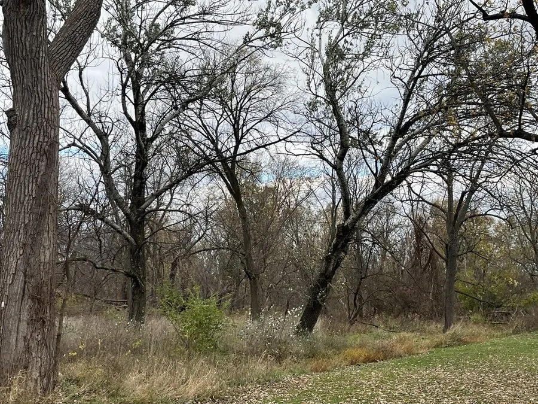

乔木 · 植物界
银白杨 Populus alba

原产欧洲至中亚的落叶乔木，叶片背面密被白色绒毛、随风翻白，树形高大，是北方重要的用材与绿化树种。
- 分类
- 门被子植物门纲木兰纲目杨柳目科杨柳科属杨属
- 栖息环境
- 海拔 2000 米以下的河岸、平原与沙地，喜光耐寒耐旱
- 地理分布
- 原产欧洲中部至中亚，中国新疆、内蒙古、甘肃等地分布或栽培
- 保护级别
- 暂无评估；中国未列入国家重点保护野生植物名录
物种志
银白杨为落叶乔木，高可达 30 m，树皮灰白色、平滑，老树基部纵裂；叶片宽卵形，掌状 3–5 裂，幼叶与萌条叶常深裂，叶背密被白色绒毛，风吹时叶片翻动、银光闪闪。花期 4 月，葇荑花序下垂，雌雄异株；蒴果成熟后裂开，种子带白色绒毛。
银白杨原产欧洲中部至中亚，中国新疆、内蒙古、甘肃等地有天然分布与栽培，喜光、耐寒、耐旱，适应性强。木材轻软，可供建筑、家具与造纸用；树形高大、叶背银白，是优良的防护林与园林绿化树种；树皮可提取栲胶。银白杨根系发达，是河岸防护与防风固沙的重要树种，但雌株飞絮较多，城市绿化时多选用雄株。
形态与习性
- 株高可达 30 m，树皮灰白色
- 花期4 月，雌雄异株
- 果期5 月，蒴果开裂飘絮
- 光照喜光，不耐长期荫蔽
- 水分耐旱也耐水湿
- 主要用途防护林与园林、建筑与造纸用材、树皮提取栲胶
趣味知识
- 银白杨叶片背面密被白色绒毛，风吹叶翻时银光闪闪，因此得名。
- 银白杨雌雄异株，春季飘絮的是雌株的种子。
- 银白杨根系发达，是河岸防护与防风固沙的重要树种。